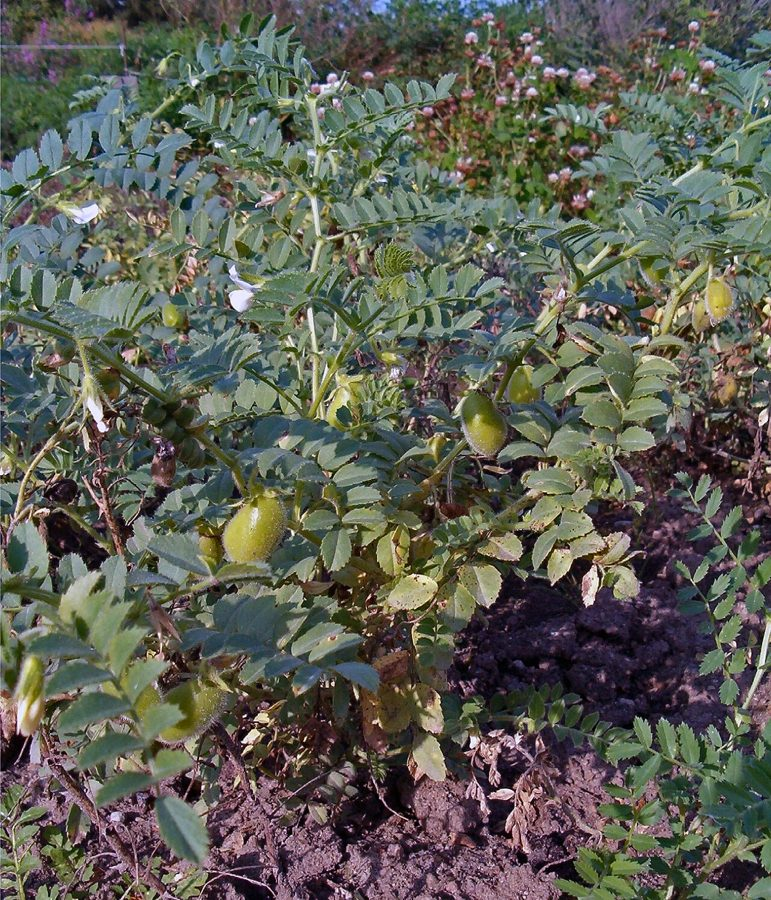

चनाChickpea
Cicer arietinum · Fabaceae · FLR-0056

- Scientific name
- Cicer arietinum L.
- Family
- Fabaceae
- Hindi
- चना
- Status here
- cultivated
- IUCN
- not evaluated
When to look कब देखें
Expected mainly in January, February, March, October, November, December.
चना / Chickpea
Cicer arietinum L. — Fabaceae
चना (छोला) — उत्तर प्रदेश की एक प्रमुख रबी (शीतकालीन) दलहन फसल है। यह एक सीधे बढ़ने वाला, अत्यधिक शाखित वार्षिक शाकीय पौधा (annual herb) है जो 20 से 50 सेमी की ऊंचाई तक बढ़ता है। इसके पत्तों में कई छोटे, आरीदार (serrated) पत्रक होते हैं जो एक विशेष प्रकार के चिपचिपे, खट्टे तरल का स्राव करते हैं जिसमें मैलिक और ऑक्जेलिक अम्ल (malic and oxalic acids) होते हैं। सर्दियों में (दिसंबर-जनवरी) इसमें छोटे, मटर जैसे गुलाबी, नीले या सफेद रंग के फूल आते हैं। इसके बाद इसमें छोटे, फूले हुए गोल फल (swollen pods) लगते हैं जिनमें एक या दो झुर्रीदार, नुकीले बीज होते हैं। चने का दाना प्रोटीन का एक बेहतरीन स्रोत है, जिसका उपयोग दाल, सत्तू और बेसन के रूप में व्यापक रूप से किया जाता है। इसकी जड़ें मिट्टी में नाइट्रोजन का स्थिरीकरण कर भूमि को उपजाऊ बनाती हैं। इसकी खट्टी पत्तियों का उपयोग गांवों में स्वादिष्ट साग (चने का साग) बनाने के लिए भी किया जाता है।
Quick Identification त्वरित पहचान
| Feature | Description |
|---|---|
| Form | Small, erect, bushy annual herb (20–50 cm tall), covered in sticky glandular hairs |
| Leaves | Alternately arranged, pinnately compound (5–8 cm long) with 9–15 pairs of small, ovate leaflets carrying sharply serrated (toothed) margins |
| Glandular Hairs | Entire plant is covered in sticky glandular hairs that secrete a sour-tasting acid dew (malic and oxalic acid) |
| Flowers | Small (8–12 mm long), pea-like, borne singly on long axillary stalks; color is typically pinkish-purple (Desi types) or pure white (Kabuli types) |
| Fruit | Small, swollen, oblong, inflated pod (1.5–2.5 cm long, 1–1.5 cm wide), covered in sticky hairs, containing 1 or 2 wrinkled seeds |
| Seeds | Angular, wrinkled, beak-shaped seed (5–10 mm size) resembling a ram's head, ranging from dark brown (Desi) to cream-white (Kabuli) |
Field tip: A small bushy winter herb covered in sticky, sour-tasting hairs, carrying sharply toothed leaflets, pinkish-purple flowers, and short swollen pods with wrinkled, beak-shaped seeds.
Morphology आकारिकी
Biometrics (typical measurements for Desi chickpea in Basti):
| Feature | Measurement |
|---|---|
| Plant height | 20–50 cm |
| Leaflet length | 8–15 mm |
| Leaflet width | 4–8 mm |
| Flower size | 8–12 mm |
| Pod length | 1.5–2.5 cm |
Glandular Secretions: The glandular hairs secrete a fluid consisting of 94% malic acid and 6% oxalic acid. This acidic layer acts as a highly effective natural defense against many leaf-eating insects.
Roots: The taproot system is deep and carries large, branched, coral-like nodules containing nitrogen-fixing Mesorhizobium ciceri bacteria.
Associated Species / Interactions सहजीवी संबंध
Leguminous host and pest harbor.
- Rhizobial activity: Nodules host Mesorhizobium bacteria, converting nitrogen to enrich alluvial soils for subsequent crops.
- Pollinators: Small wild solitary bees and hoverflies visit the pink/white flowers for pollen.
- Insect hosts: Serves as the primary winter host for the gram pod borer moth, which lays eggs on young leaves and buds.
- Intercropping companion: Cultivated in rows alongside wheat (
[FLR-0051 Wheat]) and Indian mustard ([FLR-0052 Mustard]), acting as a nitrogen-sharing companion.
Life Cycle / Phenology जीवन चक्र
- Sowing: Sown in early winter (October–November) on residual soil moisture after the Kharif crop harvest.
- Vegetative growth: Grows rapidly through November–December, forming dense green leafy tufts. The foliage is pruned early (called "nipping") to promote lateral branching.
- Flowering: Small pea-like flowers bloom in late December to January.
- Podding: Swollen green pods develop in January–February, drying to a papery straw-yellow state by late February.
- Harvest: Harvested in February–March. The dry plants are pulled or cut, dried on threshing floors (khalihaan), and crushed under wooden rollers or beaten to release the seeds.
Pests and Diseases कीट और रोग
- Gram Pod Borer: Caterpillars of Helicoverpa armigera feed on leaves first, then bore into the green pods to consume the developing seeds, leaving empty husks with round exit holes.
- Fusarium Wilt: Soil-borne fungus Fusarium oxysporum f. sp. ciceri infects the roots, causing the leaves to droop, turn yellow, and dry up rapidly.
- Ascochyta Blight: Fungal pathogen Ascochyta rabiei forms dark, circular spots on leaves and stems under cool, wet winter conditions, causing stem breakage.
Agricultural / Human Relevance कृषि प्रासंगिकता
Core pulse, protein staple, and traditional flour.
- Protein diet: Cultivated as a primary pulse crop. Desi chana is processed into chana dal and whole grains. Refined into gram flour (besan) for cooking fried snacks.
- Roasted Chana & Sattu: Roasted whole grains (Bhuna Chana) are eaten as a highly nutritious snack. Grains are also ground to produce Sattu flour, a traditional high-protein dietary staple in UP.
- Cultivars: Sown varieties in Basti include Narendra Chana-1, Narendra Chana-5, Radhey, and K-850.
Traditional and Ethnobotanical Use
- Dew collection (Chana ka Sirka): In UP villages, a thin white cotton cloth is dragged over the chickpea field at dawn to collect the acidic dew secreted by the leaves. The cloth is squeezed into glass bottles to yield a sour liquid (Chana ka Sirka or acid dew) used in traditional medicine to cure indigestion, stomach ache, and heat stroke.
- Sattu Drink: Ground roasted chickpea flour is mixed with water, roasted cumin, and black salt to make a cooling summer drink that prevents heat stroke (loo).
- Youth tonic: Eaten as soaked raw sprouts at dawn to improve physical strength and treat general weakness.
Cultivation Calendar
| Stage | Month(s) |
|---|---|
| Field preparation | October (ploughing to secure moisture) |
| Sowing | October–November |
| Vegetative growth & Nipping | November–December (pruning of shoot tips to increase branching) |
| Flowering | December–January |
| Harvest | Late February–March |
Expected Locally स्थानीय रूप से अपेक्षित
Not a field record. Written from published accounts for eastern Uttar Pradesh. No confirmed local sighting yet — if you have seen it, that is what the atlas needs.
अभी तक स्थानीय पुष्टि नहीं। यह विवरण प्रकाशित स्रोतों से है, किसी अवलोकन से नहीं।
Widespread across Basti district, particularly in fields with lighter alluvial soils in Bahadurpur, Khalilabad, and Harraiya blocks. During November, children and women can be seen in fields picking young chickpea shoot tips (Chana ka Saag) to cook a popular winter green vegetable.
Distribution वितरण
Global range: Domesticated in southeastern Turkey and the Fertile Crescent over 7,000 years ago. It is now cultivated globally, particularly in West Asia, North Africa, Southern Europe, and North America.
In India: India is the largest global producer of chickpea, with major cultivation in Madhya Pradesh, Rajasthan, Maharashtra, and Uttar Pradesh.
In Uttar Pradesh: Grown in all plain districts during the winter season.
In Basti district / eastern UP: Cultivated resident; a vital winter pulse crop.
Research Questions शोध प्रश्न
- How does the yield of Cicer arietinum change when the vegetative shoots are pruned ("nipped") in December compared to un-pruned fields in Basti? / दिसंबर में चने के पौधों की ऊपरी कोपलों को तोड़ने (nipping) से उसकी उपज पर एकल अन-प्रूनेड खेतों की तुलना में क्या प्रभाव पड़ता है?
- What is the exact chemical composition and pH of the acidic dew collected from Basti's chickpea fields? / बस्ती के चना खेतों से एकत्रित किए जाने वाले खट्टे ओस (सिरका) का वास्तविक पीएच और रासायनिक संगठन क्या होता है?
- Does intercropping Chickpea with Mustard reduce the population of Helicoverpa armigera compared to monoculture chickpea fields?
- Is the Mesorhizobium nitrogen-fixing rate in chickpea affected by the application of chemical phosphatic fertilizers in Basti soils?
- Can children chew a fresh chickpea leaflet to taste its sourness, and compare it with the taste of a lentil leaflet? — A simple sensory biology activity.
Similar Species मिलती-जुलती प्रजातियाँ
| Species | Key Difference | हिंदी |
|---|---|---|
Lens culinaris (Lentil [FLR-0053]) | Leaflets are smooth and narrow without serrated margins; lack acidic glandular hairs; pods are flat (not swollen). | मसूर — चिकने संकीर्ण पत्रक, अम्लीय बाल रहित, चपटी फलियाँ |
Cajanus cajan (Pigeon Pea [FLR-0055]) | Grows as a tall woody shrub (1.5–3 m); leaves are trifoliate (only 3 leaflets); flowers are large and yellow. | अरहर — लंबा झाड़ीदार पौधा, तीन बड़े पत्रक, बड़े पीले फूल |
| Vicia faba (Faba Bean / Broad Bean) | Plants are much larger and thicker; leaflets are large and fleshy without serrations; pods are large and thick; less common. | बाकला / ब्रॉड बीन — विशाल मोटे पौधे, बड़े मोमी पत्रक, बड़ी मोटी फलियाँ |
Taxonomy & Classification वर्गीकरण
Original description. Carl Linnaeus described Chickpea as Cicer arietinum in 1753 in Species Plantarum (Vol. 2, p. 738). The type locality was Europe. The genus name Cicer is the classical Latin name for chickpea. The specific epithet arietinum is derived from the Latin arietis (ram), referring to the wrinkled seed's resemblance to a ram's head.
Subspecies. Monotypic as a wild lineage, but categorized agriculturally into two major groups: Desi (small, dark, wrinkled seeds, common in UP) and Kabuli (large, white-cream, smooth seeds).
Family and order placement. Placed in the order Fabales, family Fabaceae, subfamily Faboideae, tribe Cicereae.
Phylogenetic notes. Cicer arietinum is the only cultivated species in the genus Cicer, closely related to its wild ancestor Cicer reticulatum, which is endemic to southeastern Turkey.
IUCN status rationale. Not evaluated (NE) by the IUCN Red List. As a globally cultivated staple pulse crop, it is under no threat of extinction.
Photo Gallery फोटो गैलरी
References संदर्भ
- Linnaeus, C. (1753). Species Plantarum. Laurentii Salvii, Holmiae, Vol. 2, p. 738. [original description]
- ICAR-Indian Institute of Pulses Research (IIPR). Cultivation Practices for Rabi Chickpea in Indo-Gangetic Plains. IIPR Bulletin, Kanpur.
- Indian Council of Agricultural Research (2021). Handbook of Legume Crops. ICAR, New Delhi.
- Brandis, D. (1906). Indian Trees. Archibald Constable & Co., London.
- Botanical Survey of India. State Flora Series: Flora of Uttar Pradesh. BSI, Kolkata.
- GBIF Occurrence Data — Cicer arietinum (2026). GBIF taxon key: 2947311.
Source file: species/flora/crops/chickpea.md